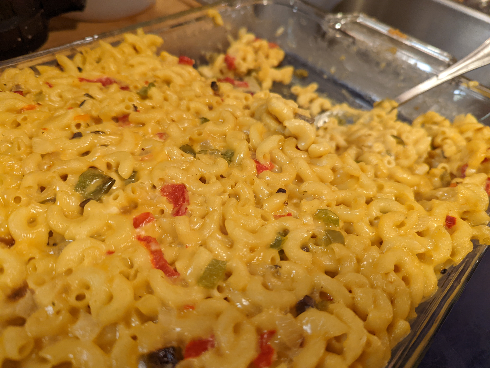

Homemade Mac and Cheese

My kids' favorite mac and cheese!
This recipe for homemade mac and cheese is, to put it plainly, quite rich. Some of the ingredients seem a bit odd. It was years before I ever even tried the recipe, which I copied from an old Great Plains cookbook that my mom has had for decades. TRUST ME - JUST TRY IT. All other mac & cheese pales in comparison!
Ingredients:
- 1 Large onion, chopped
- 1 large green bell pepper, chopped
- 1 stick butter
- 2 cans Cream of Mushroom soup
- 1 small jar pimento, chopped
- 1 lb. cheese, grated (I like to mix 1/2 lb. cheddar and 1/2 lb. pepper jack)
- 1 lb. elbow macaroni, cooked
- milk
Steps:
- Sautee onion and bell pepper in butter.
- Add soup, pimento, and cheese.
- Stir together, then mix into cooked macaroni.
- Add a small amount of milk if needed to moisten.
- Pour into casserole pan.
- Bake at 350 degrees til heated.